| Note that these instructions apply to
GXT 2.x. GWT Designer does not support GXT 3.x. Ext GWT (GXT) is a Java library for building rich internet applications with the Google Web Toolkit (GWT). It includes:
You can download the latest Ext GWT (GXT) update here and access the Ext GWT (GXT) docs here. To configure your project to use Ext GWT (GXT), you can either follow the instructions in the setup.txt file in the Ext GWT download, or you can select your GWT module file and right-click to select the Google Web Toolkit > Configure for using Ext GWT (GXT) command. This will add the gxt.jar to your classpath and module file and various GXT files to your war folder.
|
Once Ext GWT (GXT) has been added to your project several new Ext GWT (GXT) palette categories will appear:
|
|
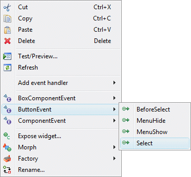In
addition to standard types events, Ext GWT (GXT) includes
a large number of untyped events which can be configured by
right-clicking on the widget and selecting the event type.
Code like the following will be generated: button.addListener(Events.Select, Hold the Ctrl key down to remove an event handler. |
| Ext GWT (GXT) includes a large number of widgets. See the
Ext GWT (GXT)
web site for more information about the individual widgets. 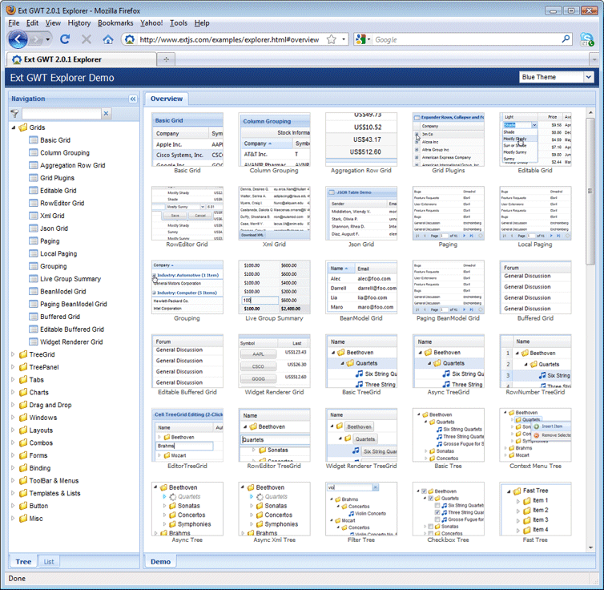 |
| Ext GWT (GXT) includes a Data Binding
framework for binding GXT BeanModels to GXT widgets. 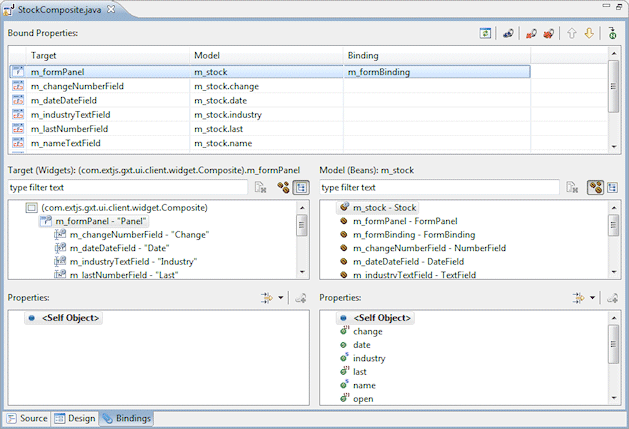 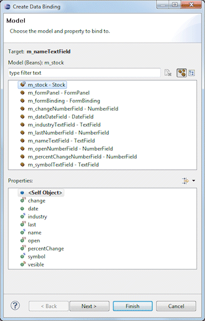 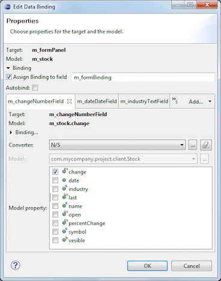 |

 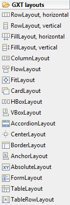
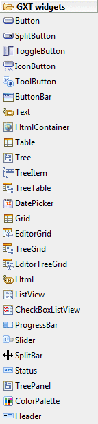
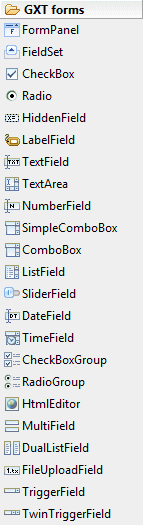
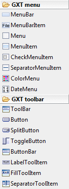
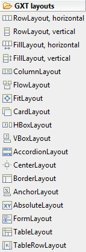
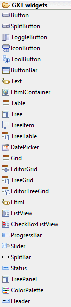
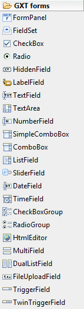
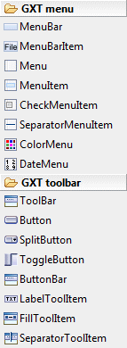